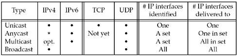

| [ Team LiB ] |
|
20.1 IntroductionIn this chapter, we will describe broadcasting and in the next chapter, we will describe multicasting. All the examples in the text so far have dealt with unicasting: a process talking to exactly one other process. Indeed, TCP works with only unicast addresses, although UDP and raw IP support other paradigms. Figure 20.1 shows a comparison of the different types of addressing. Figure 20.1. Different forms of addressing. IPv6 has added anycasting to the addressing architecture. An IPv4 version of anycasting, which was never widely deployed, is described in RFC 1546 [Partridge, Mendez, and Milliken 1993]. IPv6 anycasting is defined in RFC 3513 [Hinden and Deering 2003]. Anycasting allows addressing one (usually the "closest" by some metric) system out of a set of systems that usually provides identical services. With an appropriate routing configuration, hosts can provide anycasting services in either IPv4 or IPv6 by injecting the same address into the routing protocol in multiple locations. However, RFC 3513's anycasting only permits routers to have anycast addresses; hosts may not provide anycasting services. As of this writing, there is no API defined for using anycast addresses. There is work in progress to refine the IPv6 anycast architecture, and hosts may be able to dynamically provide anycasting services in the future. The important points in Figure 20.1 are:
One use for broadcasting is to locate a server on the local subnet when the server is assumed to be on the local subnet but its unicast IP address is not known. This is sometimes called resource discovery. Another use is to minimize the network traffic on a LAN when there are multiple clients communicating with a single server. There are numerous examples of Internet applications that use broadcasting for this purpose. Some of these can also use multicasting.
We must note that multicasting can replace both uses of broadcasting (resource discovery and reducing network traffic) and we will describe the problems with broadcasting later in this chapter and the next chapter. |
| [ Team LiB ] |
|